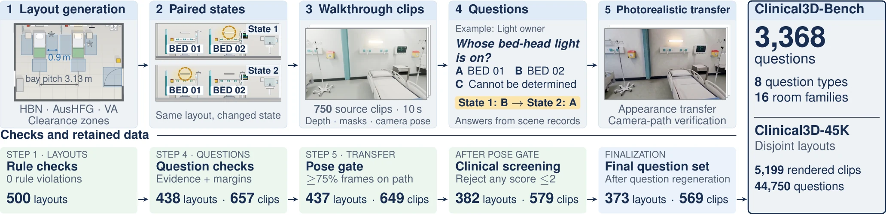

Benchmark at a Glance
3,368
questions
8
question types
569
ten-second clips
373
layouts
16
room families
10
physicians screened
Scenes are generated in simulation from hospital design standards and every answer is computed from the scene record; the clips are transferred to photorealistic appearance, verified against the scene and screened by physicians. A disjoint training set, Clinical3D-Train, has 44,750 questions.
Eight question types in four task groups
Spatial memory
- Count
- How many instances of a category seen so far are out of view at time t.
- Re-ID
- Which instance at t′ is the leftmost one of its category at t.
Ownership and relations
- Light owner
- Which bed the lit bed-head light belongs to.
- Device ref.
- What the device nearest a named landmark is mounted on, which bed label it carries, or beside which bed, and on which side of its patient, a labelled device is.
Frames of reference
- Patient frame
- Whether an object near the bed (within 1.5 m) or elsewhere in the room is on the supine patient's left or right.
Metric navigation
- Direction
- The first change of direction on the shortest walkable route to the goal, the goal's quadrant from the start pose, or which corridor door is the goal.
- Route
- The missing turns in the turn sequence of the shortest route, or which of several goals is nearest along the walking route.
- Passability
- Whether a passage at least 0.9 m (crash cart) or 1.2 m (transport bed) wide leads to the goal, or whether a transport bed can be pushed along a straight route marked on the floor.

